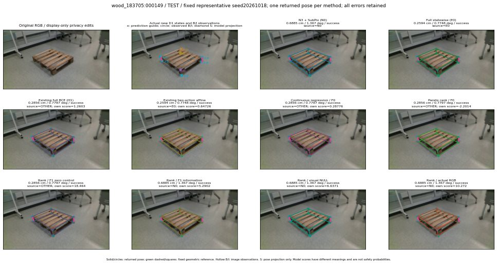

실선은 반환 자세, 초록 점선은 고정 기하 참조입니다. S는 영상 관측이 아닙니다. 점수는 모델별 의미가 다르며 보정된 안전 확률이 아닙니다. 개인정보 처리는 표시 사본에만 적용했습니다.
| 방법·seed | 위치 / 회전 / 공동성공 | 실제 출처 | 선택 후보 | 각 모델 자체 점수 |
|---|---|---|---|---|
| N0 | 0.6885 cm / 1.367 deg / success | N0 | N/A | N/A |
| E0 | 0.2594 cm / 0.7748 deg / success | E0 | N/A | N/A |
| E0_REGENERATED | 0.2594 cm / 0.7748 deg / success | E0 | E0_REGENERATED | N/A |
| POSEFIX_SUBPIX_PF_ANCHOR | 1.903 cm / 1.546 deg / success | OTHER | N/A | N/A |
| POSEFIX_SUBPIX_YOLO_ANCHOR | 1.903 cm / 1.546 deg / success | OTHER | N/A | N/A |
| D1_H1_MLP_s20261018 | 0.2856 cm / 0.7797 deg / success | OTHER | G10/ORIGINAL_WD/selected | 1.2603338956832886 |
| D1_H1_MLP_s20261019 | 0.2594 cm / 0.7748 deg / success | E0 | E0_REGENERATED | 0.955137312412262 |
| D1_H1_MLP_s20261020 | 0.2856 cm / 0.7797 deg / success | OTHER | G10/ORIGINAL_WD/selected | 1.2949849367141724 |
| D1_H1_PAIR_MLP_s20261018 | 0.2594 cm / 0.7748 deg / success | E0 | E0_REGENERATED | -0.04761215299367905 |
| D1_H1_PAIR_MLP_s20261019 | 0.2594 cm / 0.7748 deg / success | E0 | E0_REGENERATED | 0.5823991894721985 |
| D1_H1_PAIR_MLP_s20261020 | 0.2594 cm / 0.7748 deg / success | E0 | E0_REGENERATED | 0.8587932586669922 |
| D1_H1_PAIR_ROLE_AFFINE_s20261018 | 0.2594 cm / 0.7748 deg / success | E0 | E0_REGENERATED | 0.647264838218689 |
| D1_H1_PAIR_ROLE_AFFINE_s20261019 | 0.2594 cm / 0.7748 deg / success | E0 | E0_REGENERATED | 0.7113092541694641 |
| D1_H1_PAIR_ROLE_AFFINE_s20261020 | 0.2594 cm / 0.7748 deg / success | E0 | E0_REGENERATED | 0.48316121101379395 |
| R_CONT_F0_s20261018 | 0.2856 cm / 0.7797 deg / success | OTHER | G10/ORIGINAL_WD/selected | 0.2877591550350189 |
| R_CONT_F0_s20261019 | 0.2856 cm / 0.7797 deg / success | OTHER | G10/ORIGINAL_WD/selected | 0.30069130659103394 |
| R_CONT_F0_s20261020 | 0.2856 cm / 0.7797 deg / success | OTHER | G10/ORIGINAL_WD/selected | 0.29394131898880005 |
| R_ORDER_F0_s20261018 | 0.2856 cm / 0.7797 deg / success | OTHER | G10/ORIGINAL_WD/selected | -2.2013866901397705 |
| R_ORDER_F0_s20261019 | 0.2856 cm / 0.7797 deg / success | OTHER | G10/ORIGINAL_WD/selected | -1.8982102870941162 |
| R_ORDER_F0_s20261020 | 0.2856 cm / 0.7797 deg / success | OTHER | G10/ORIGINAL_WD/selected | 7.272669792175293 |
| R_ORDER_F1_ZERO_s20261018 | 0.2856 cm / 0.7797 deg / success | OTHER | G10/ORIGINAL_WD/selected | 18.46431541442871 |
| R_ORDER_F1_ZERO_s20261019 | 0.2856 cm / 0.7797 deg / success | OTHER | G10/ORIGINAL_WD/selected | 12.238072395324707 |
| R_ORDER_F1_ZERO_s20261020 | 0.2856 cm / 0.7797 deg / success | OTHER | G10/ORIGINAL_WD/selected | 8.291435241699219 |
| R_ORDER_F1_s20261018 | 0.6885 cm / 1.367 deg / success | N0 | N0 | 5.290182590484619 |
| R_ORDER_F1_s20261019 | 0.6885 cm / 1.367 deg / success | N0 | N0 | 8.252937316894531 |
| R_ORDER_F1_s20261020 | 0.2856 cm / 0.7797 deg / success | OTHER | G10/ORIGINAL_WD/selected | 0.8746005296707153 |
| V_ORDER_NULL_s20261018 | 0.6885 cm / 1.367 deg / success | N0 | N0 | 6.637115955352783 |
| V_ORDER_NULL_s20261019 | 0.6885 cm / 1.367 deg / success | N0 | N0 | 3.642136812210083 |
| V_ORDER_NULL_s20261020 | 0.2594 cm / 0.7748 deg / success | E0 | E0_REGENERATED | 0.1858559250831604 |
| V_ORDER_RGB_s20261018 | 0.6885 cm / 1.367 deg / success | N0 | N0 | 10.272239685058594 |
| V_ORDER_RGB_s20261019 | 0.6885 cm / 1.367 deg / success | N0 | N0 | 3.7245733737945557 |
| V_ORDER_RGB_s20261020 | 0.6885 cm / 1.367 deg / success | N0 | N0 | -10.73232650756836 |